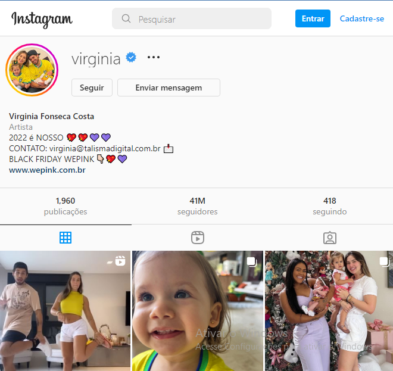

No Instagram:
Virgínia Fonseca é influenciadora digital. Só no Instagram, já ultrapassou a marca de 38,5 milhões de seguidores, tornando-se uma das mais brasileiras acompanhadas na rede social. Na web, compartilha detalhes do dia a dia e dicas de beleza.
No Youtube:
Começou a sua carreira na internet quando criou o seu canal no Youtube, em 2016, onde dá dicas de moda e beleza, além de mostrar a sua rotina nas redes sociais, que só crescem a cada dia. Atualmente, possui a sua própria agência de marketing pessoal, junto com os seus familiares, e uma clínica de estética com amigos.
No TikTok:
No TikTok a influencer tem mais de 35 milhões de seguidores e 883 milhões de curtidas na rede.
@virginiafonseca COMEMORANDO O TOP5 DO SPOTIFYYYYYY!!!!!
♬ Roça Em Mim - Zé Felipe & Ana Castela & Luan Pereira